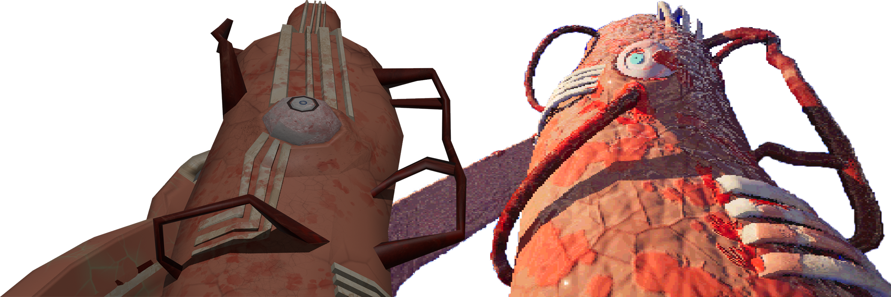

FLESH GUN: ADRENALINE JUNKIE
FLESH GUN: ADRENALINE JUNKIE was the second game for my Rapid Games Prototyping unit. The brief for this game was to have waves of enemies, the overall idea for this game is that as your health lowers time slows down but you shoot faster. It is a Boomer Shooter with a wide variety of movement like dashing and wall running with three different types of enemies you fight in various combos each wave.
After the university project ended I came back to Flesh Gun a few times to make some minor updates and changes but as it went on, I realised that I created a monolith inside of the player, which meant if I wanted to change minor things I would have to rework large amounts of the game. This is one of my favourite games I’ve made, and I would love to revisit the idea in some form later on.

The actual Flesh Gun went through two separate models, one much lower poly than the one that features in the game but as development went on I decided to fully remake it from scratch.